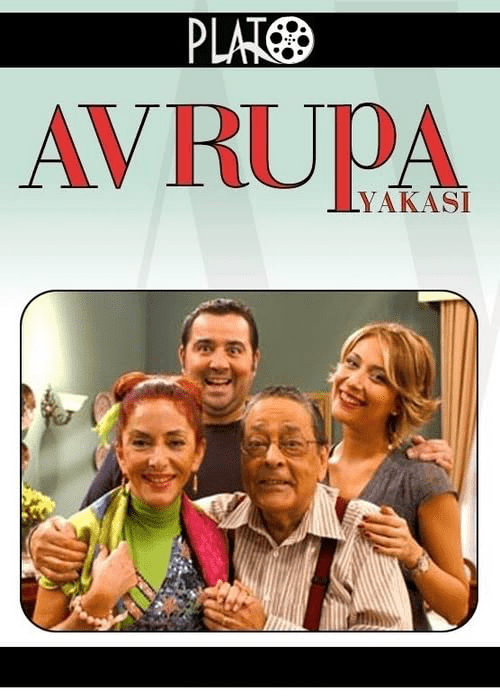

Avrupa Yakası

Avrupa Yakası, Gülse Birsel’in kaleminden çıkan ve 2004-2009 yılları arasında yayınlanarak Türk televizyon tarihine damga vuran unutulmaz bir komedi dizisidir. Dizide, İstanbul’un Avrupa yakasında geçen renkli yaşam, sosyal çevrelerin ilginç kesişimleri ve akıllara kazınan karakterler aracılığıyla izleyiciye esprili, samimi ve eleştirel bir bakış sunulur. Günlük yaşamın sıradan anlarını mizah dolu diyaloglarla yeniden yorumlayan yapım, kendine özgü üslubu ve sürükleyici senaryosuyla geniş kitlelerce benimsenmiş, kültürel bir fenomen haline gelmiştir.